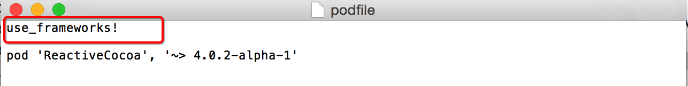

最快让你上手ReactiveCocoa之基础篇
前言
很多blog都说ReactiveCocoa好用，然后各种秀自己如何灵活运用ReactiveCocoa，但是感觉真正缺少的是一篇如何学习ReactiveCocoa的文章，小编看了很多篇都没看出怎么使用ReactiveCocoa,于是决定自己写一遍关于学习ReactiveCocoa的文章,本文主要针对如何从零开始学习ReactiveCocoa.
1.ReactiveCocoa简介
ReactiveCocoa（简称为RAC）,是由Github开源的一个应用于iOS和OS开发的新框架,Cocoa是苹果整套框架的简称，因此很多苹果框架喜欢以Cocoa结尾。
2.ReactiveCocoa作用
在我们iOS开发过程中，经常会响应某些事件来处理某些业务逻辑，例如按钮的点击，上下拉刷新，网络请求，属性的变化（通过KVO）或者用户位置的变化（通过CoreLocation）。但是这些事件都用不同的方式来处理，比如action、delegate、KVO、callback等。
其实这些事件，都可以通过RAC处理，ReactiveCocoa为事件提供了很多处理方法，而且利用RAC处理事件很方便，可以把要处理的事情，和监听的事情的代码放在一起，这样非常方便我们管理，就不需要跳到对应的方法里。非常符合我们开发中高聚合，低耦合的思想。
3.编程思想
在开发中我们也不能太依赖于某个框架，否则这个框架不更新了，导致项目后期没办法维护，比如之前Facebook提供的Three20框架，在当时也是神器，但是后来不更新了，也就没什么人用了。因此我感觉学习一个框架，还是有必要了解它的编程思想。
先简单介绍下目前咱们已知的编程思想。
3.1 面向过程：处理事情以过程为核心，一步一步的实现。
3.2 面向对象：万物皆对象
3.3 链式编程思想：是将多个操作（多行代码）通过点号(.)链接在一起成为一句代码,使代码可读性好。a(1).b(2).c(3)
链式编程特点：方法的返回值是block,block必须有返回值（本身对象），block参数（需要操作的值）代表：masonry框架。练习一:模仿masonry，写一个加法计算器，练习链式编程思想。
3.4 响应式编程思想：不需要考虑调用顺序，只需要知道考虑结果，类似于蝴蝶效应，产生一个事件，会影响很多东西，这些事件像流一样的传播出去，然后影响结果，借用面向对象的一句话，万物皆是流。
代表：KVO运用。练习二:KVO底层实现。
3.5 函数式编程思想：是把操作尽量写成一系列嵌套的函数或者方法调用。
函数式编程特点：每个方法必须有返回值（本身对象）,把函数或者Block当做参数,block参数（需要操作的值）block返回值（操作结果）代表：ReactiveCocoa。练习三:用函数式编程实现，写一个加法计算器,并且加法计算器自带判断是否等于某个值.
4.ReactiveCocoa编程思想
ReactiveCocoa结合了几种编程风格：
函数式编程（Functional Programming）
响应式编程（Reactive Programming）
所以，你可能听说过ReactiveCocoa被描述为函数响应式编程（FRP）框架。
以后使用RAC解决问题，就不需要考虑调用顺序，直接考虑结果，把每一次操作都写成一系列嵌套的方法中，使代码高聚合，方便管理。
5.如何导入ReactiveCocoa框架
通常都会使用CocoaPods（用于管理第三方框架的插件）帮助我们导入。
PS:CocoaPods教程（http://code4app.com/article/cocoapods-install-usage）
练习四:创建一个新的工程，演示下，框架的导入。
注意：
* podfile如果只描述pod 'ReactiveCocoa', '~> 4.0.2-alpha-1'，会导入不成功

- 报错信息

- 需要在podfile加上use_frameworks，重新pod install 才能导入成功。

6.ReactiveCocoa常见类。
学习框架首要之处:个人认为先要搞清楚框架中常用的类，在RAC中最核心的类RACSiganl,搞定这个类就能用ReactiveCocoa开发了。
练习五:介绍常见类
RACSiganl:信号类,一般表示将来有数据传递，只要有数据改变，信号内部接收到数据，就会马上发出数据。
信号类(RACSiganl)，只是表示当数据改变时，信号内部会发出数据，它本身不具备发送信号的能力，而是交给内部一个订阅者去发出。
默认一个信号都是冷信号，也就是值改变了，也不会触发，只有订阅了这个信号，这个信号才会变为热信号，值改变了才会触发。
如何订阅信号：调用信号RACSignal的subscribeNext就能订阅。
RACSiganl简单使用:
// RACSignal使用步骤：
// 1.创建信号 + (RACSignal *)createSignal:(RACDisposable * (^)(id<RACSubscriber> subscriber))didSubscribe
// 2.发送信号 - (void)sendNext:(id)value
// 3.订阅信号,才会激活信号. - (RACDisposable *)subscribeNext:(void (^)(id x))nextBlock
// RACSignal底层实现：
// 1.创建信号，首先把didSubscribe保存到信号中，还不会触发。
// 2.当信号被订阅，也就是调用signal的subscribeNext:nextBlock
// 2.2 subscribeNext内部会创建订阅者subscriber，并且把nextBlock保存到subscriber中。
// 2.1 subscribeNext内部会调用siganl的didSubscribe
// 3.siganl的didSubscribe中调用[subscriber sendNext:@1];
// 3.1 sendNext底层其实就是执行subscriber的nextBlock
// 1.创建信号
RACSignal *siganl = [RACSignal createSignal:^RACDisposable *(id<RACSubscriber> subscriber) {
// block调用时刻：每当有订阅者订阅信号，就会调用block。
// 2.发送信号
[subscriber sendNext:@1];
// 如果不在发送数据，最好发送信号完成，内部会自动调用[RACDisposable disposable]取消订阅信号。
[subscriber sendCompleted];
return [RACDisposable disposableWithBlock:^{
// block调用时刻：当信号发送完成或者发送错误，就会自动执行这个block,取消订阅信号。
// 执行完Block后，当前信号就不在被订阅了。
NSLog(@"信号被销毁");
}];
}];
// 3.订阅信号,才会激活信号.
[siganl subscribeNext:^(id x) {
// block调用时刻：每当有信号发出数据，就会调用block.
NSLog(@"接收到数据:%@",x);
}];
RACSubscriber:表示订阅者的意思，用于发送信号，这是一个协议，不是一个类，只要遵守这个协议，并且实现方法才能成为订阅者。通过create创建的信号，都有一个订阅者，帮助他发送数据。
RACDisposable:用于取消订阅或者清理资源，当信号发送完成或者发送错误的时候，就会自动触发它。
-
使用场景:不想监听某个信号时，可以通过它主动取消订阅信号。
RACSubject:RACSubject:信号提供者，自己可以充当信号，又能发送信号。
-
使用场景:通常用来代替代理，有了它，就不必要定义代理了。
RACReplaySubject:重复提供信号类，RACSubject的子类。
-
使用场景一:如果一个信号每被订阅一次，就需要把之前的值重复发送一遍，使用重复提供信号类。 使用场景二:可以设置capacity数量来限制缓存的value的数量,即只缓充最新的几个值。RACSubject和RACReplaySubject简单使用:
// RACSubject使用步骤
// 1.创建信号 [RACSubject subject]，跟RACSiganl不一样，创建信号时没有block。
// 2.订阅信号 - (RACDisposable *)subscribeNext:(void (^)(id x))nextBlock
// 3.发送信号 sendNext:(id)value
// RACSubject:底层实现和RACSignal不一样。
// 1.调用subscribeNext订阅信号，只是把订阅者保存起来，并且订阅者的nextBlock已经赋值了。
// 2.调用sendNext发送信号，遍历刚刚保存的所有订阅者，一个一个调用订阅者的nextBlock。
// 1.创建信号
RACSubject *subject = [RACSubject subject];
// 2.订阅信号
[subject subscribeNext:^(id x) {
// block调用时刻：当信号发出新值，就会调用.
NSLog(@"第一个订阅者%@",x);
}];
[subject subscribeNext:^(id x) {
// block调用时刻：当信号发出新值，就会调用.
NSLog(@"第二个订阅者%@",x);
}];
// 3.发送信号
[subject sendNext:@"1"];
// RACReplaySubject使用步骤:
// 1.创建信号 [RACSubject subject]，跟RACSiganl不一样，创建信号时没有block。
// 2.可以先订阅信号，也可以先发送信号。
// 2.1 订阅信号 - (RACDisposable *)subscribeNext:(void (^)(id x))nextBlock
// 2.2 发送信号 sendNext:(id)value
// RACReplaySubject:底层实现和RACSubject不一样。
// 1.调用sendNext发送信号，把值保存起来，然后遍历刚刚保存的所有订阅者，一个一个调用订阅者的nextBlock。
// 2.调用subscribeNext订阅信号，遍历保存的所有值，一个一个调用订阅者的nextBlock
// 如果想当一个信号被订阅，就重复播放之前所有值，需要先发送信号，在订阅信号。
// 也就是先保存值，在订阅值。
// 1.创建信号
RACReplaySubject *replaySubject = [RACReplaySubject subject];
// 2.发送信号
[replaySubject sendNext:@1];
[replaySubject sendNext:@2];
// 3.订阅信号
[replaySubject subscribeNext:^(id x) {
NSLog(@"第一个订阅者接收到的数据%@",x);
}];
// 订阅信号
[replaySubject subscribeNext:^(id x) {
NSLog(@"第二个订阅者接收到的数据%@",x);
}];
-
RACSubject替换代理
// 需求:
// 1.给当前控制器添加一个按钮，modal到另一个控制器界面
// 2.另一个控制器view中有个按钮，点击按钮，通知当前控制器
步骤一：在第二个控制器.h，添加一个RACSubject代替代理。
@interface TwoViewController : UIViewController
@property (nonatomic, strong) RACSubject *delegateSignal;
@end
步骤二：监听第二个控制器按钮点击
@implementation TwoViewController
- (IBAction)notice:(id)sender {
// 通知第一个控制器，告诉它，按钮被点了
// 通知代理
// 判断代理信号是否有值
if (self.delegateSignal) {
// 有值，才需要通知
[self.delegateSignal sendNext:nil];
}
}
@end
步骤三：在第一个控制器中，监听跳转按钮，给第二个控制器的代理信号赋值，并且监听.
@implementation OneViewController
- (IBAction)btnClick:(id)sender {
// 创建第二个控制器
TwoViewController *twoVc = [[TwoViewController alloc] init];
// 设置代理信号
twoVc.delegateSignal = [RACSubject subject];
// 订阅代理信号
[twoVc.delegateSignal subscribeNext:^(id x) {
NSLog(@"点击了通知按钮");
}];
// 跳转到第二个控制器
[self presentViewController:twoVc animated:YES completion:nil];
}
@end
RACTuple:元组类,类似NSArray,用来包装值.
RACSequence:RAC中的集合类，用于代替NSArray,NSDictionary,可以使用它来快速遍历数组和字典。
使用场景：1.字典转模型
RACSequence和RACTuple简单使用
// 1.遍历数组
NSArray *numbers = @[@1,@2,@3,@4];
// 这里其实是三步
// 第一步: 把数组转换成集合RACSequence numbers.rac_sequence
// 第二步: 把集合RACSequence转换RACSignal信号类,numbers.rac_sequence.signal
// 第三步: 订阅信号，激活信号，会自动把集合中的所有值，遍历出来。
[numbers.rac_sequence.signal subscribeNext:^(id x) {
NSLog(@"%@",x);
}];
// 2.遍历字典,遍历出来的键值对会包装成RACTuple(元组对象)
NSDictionary *dict = @{@"name":@"xmg",@"age":@18};
[dict.rac_sequence.signal subscribeNext:^(RACTuple *x) {
// 解包元组，会把元组的值，按顺序给参数里面的变量赋值
RACTupleUnpack(NSString *key,NSString *value) = x;
// 相当于以下写法
// NSString *key = x[0];
// NSString *value = x[1];
NSLog(@"%@ %@",key,value);
}];
// 3.字典转模型
// 3.1 OC写法
NSString *filePath = [[NSBundle mainBundle] pathForResource:@"flags.plist" ofType:nil];
NSArray *dictArr = [NSArray arrayWithContentsOfFile:filePath];
NSMutableArray *items = [NSMutableArray array];
for (NSDictionary *dict in dictArr) {
FlagItem *item = [FlagItem flagWithDict:dict];
[items addObject:item];
}
// 3.2 RAC写法
NSString *filePath = [[NSBundle mainBundle] pathForResource:@"flags.plist" ofType:nil];
NSArray *dictArr = [NSArray arrayWithContentsOfFile:filePath];
NSMutableArray *flags = [NSMutableArray array];
_flags = flags;
// rac_sequence注意点：调用subscribeNext，并不会马上执行nextBlock，而是会等一会。
[dictArr.rac_sequence.signal subscribeNext:^(id x) {
// 运用RAC遍历字典，x：字典
FlagItem *item = [FlagItem flagWithDict:x];
[flags addObject:item];
}];
NSLog(@"%@", NSStringFromCGRect([UIScreen mainScreen].bounds));
// 3.3 RAC高级写法:
NSString *filePath = [[NSBundle mainBundle] pathForResource:@"flags.plist" ofType:nil];
NSArray *dictArr = [NSArray arrayWithContentsOfFile:filePath];
// map:映射的意思，目的：把原始值value映射成一个新值
// array: 把集合转换成数组
// 底层实现：当信号被订阅，会遍历集合中的原始值，映射成新值，并且保存到新的数组里。
NSArray *flags = [[dictArr.rac_sequence map:^id(id value) {
return [FlagItem flagWithDict:value];
}] array];
RACCommand:RAC中用于处理事件的类，可以把事件如何处理,事件中的数据如何传递，包装到这个类中，他可以很方便的监控事件的执行过程。
使用场景:监听按钮点击，网络请求
RACCommand简单使用
// 一、RACCommand使用步骤:
// 1.创建命令 initWithSignalBlock:(RACSignal * (^)(id input))signalBlock
// 2.在signalBlock中，创建RACSignal，并且作为signalBlock的返回值
// 3.执行命令 - (RACSignal *)execute:(id)input
// 二、RACCommand使用注意:
// 1.signalBlock必须要返回一个信号，不能传nil.
// 2.如果不想要传递信号，直接创建空的信号[RACSignal empty];
// 3.RACCommand中信号如果数据传递完，必须调用[subscriber sendCompleted]，这时命令才会执行完毕，否则永远处于执行中。
// 4.RACCommand需要被强引用，否则接收不到RACCommand中的信号，因此RACCommand中的信号是延迟发送的。
// 三、RACCommand设计思想：内部signalBlock为什么要返回一个信号，这个信号有什么用。
// 1.在RAC开发中，通常会把网络请求封装到RACCommand，直接执行某个RACCommand就能发送请求。
// 2.当RACCommand内部请求到数据的时候，需要把请求的数据传递给外界，这时候就需要通过signalBlock返回的信号传递了。
// 四、如何拿到RACCommand中返回信号发出的数据。
// 1.RACCommand有个执行信号源executionSignals，这个是signal of signals(信号的信号),意思是信号发出的数据是信号，不是普通的类型。
// 2.订阅executionSignals就能拿到RACCommand中返回的信号，然后订阅signalBlock返回的信号，就能获取发出的值。
// 五、监听当前命令是否正在执行executing
// 六、使用场景,监听按钮点击，网络请求
// 1.创建命令
RACCommand *command = [[RACCommand alloc] initWithSignalBlock:^RACSignal *(id input) {
NSLog(@"执行命令");
// 创建空信号,必须返回信号
// return [RACSignal empty];
// 2.创建信号,用来传递数据
return [RACSignal createSignal:^RACDisposable *(id<RACSubscriber> subscriber) {
[subscriber sendNext:@"请求数据"];
// 注意：数据传递完，最好调用sendCompleted，这时命令才执行完毕。
[subscriber sendCompleted];
return nil;
}];
}];
// 强引用命令，不要被销毁，否则接收不到数据
_conmmand = command;
// 3.执行命令
[self.conmmand execute:@1];
// 4.订阅RACCommand中的信号
[command.executionSignals subscribeNext:^(id x) {
[x subscribeNext:^(id x) {
NSLog(@"%@",x);
}];
}];
// RAC高级用法
// switchToLatest:用于signal of signals，获取signal of signals发出的最新信号,也就是可以直接拿到RACCommand中的信号
[command.executionSignals.switchToLatest subscribeNext:^(id x) {
NSLog(@"%@",x);
}];
// 5.监听命令是否执行完毕,默认会来一次，可以直接跳过，skip表示跳过第一次信号。
[[command.executing skip:1] subscribeNext:^(id x) {
if ([x boolValue] == YES) {
// 正在执行
NSLog(@"正在执行");
}else{
// 执行完成
NSLog(@"执行完成");
}
}];
RACMulticastConnection:用于当一个信号，被多次订阅时，为了保证创建信号时，避免多次调用创建信号中的block，造成副作用，可以使用这个类处理。
使用注意:RACMulticastConnection通过RACSignal的-publish或者-muticast:方法创建.
RACMulticastConnection简单使用:
// RACMulticastConnection使用步骤:
// 1.创建信号 + (RACSignal *)createSignal:(RACDisposable * (^)(id<RACSubscriber> subscriber))didSubscribe
// 2.创建连接 RACMulticastConnection *connect = [signal publish];
// 3.订阅信号,注意：订阅的不在是之前的信号，而是连接的信号。 [connect.signal subscribeNext:nextBlock]
// 4.连接 [connect connect]
// RACMulticastConnection底层原理:
// 1.创建connect，connect.sourceSignal -> RACSignal(原始信号) connect.signal -> RACSubject
// 2.订阅connect.signal，会调用RACSubject的subscribeNext，创建订阅者，而且把订阅者保存起来，不会执行block。
// 3.[connect connect]内部会订阅RACSignal(原始信号)，并且订阅者是RACSubject
// 3.1.订阅原始信号，就会调用原始信号中的didSubscribe
// 3.2 didSubscribe，拿到订阅者调用sendNext，其实是调用RACSubject的sendNext
// 4.RACSubject的sendNext,会遍历RACSubject所有订阅者发送信号。
// 4.1 因为刚刚第二步，都是在订阅RACSubject，因此会拿到第二步所有的订阅者，调用他们的nextBlock
// 需求：假设在一个信号中发送请求，每次订阅一次都会发送请求，这样就会导致多次请求。
// 解决：使用RACMulticastConnection就能解决.
// 1.创建请求信号
RACSignal *signal = [RACSignal createSignal:^RACDisposable *(id<RACSubscriber> subscriber) {
NSLog(@"发送请求");
return nil;
}];
// 2.订阅信号
[signal subscribeNext:^(id x) {
NSLog(@"接收数据");
}];
// 2.订阅信号
[signal subscribeNext:^(id x) {
NSLog(@"接收数据");
}];
// 3.运行结果，会执行两遍发送请求，也就是每次订阅都会发送一次请求
// RACMulticastConnection:解决重复请求问题
// 1.创建信号
RACSignal *signal = [RACSignal createSignal:^RACDisposable *(id<RACSubscriber> subscriber) {
NSLog(@"发送请求");
[subscriber sendNext:@1];
return nil;
}];
// 2.创建连接
RACMulticastConnection *connect = [signal publish];
// 3.订阅信号，
// 注意：订阅信号，也不能激活信号，只是保存订阅者到数组，必须通过连接,当调用连接，就会一次性调用所有订阅者的sendNext:
[connect.signal subscribeNext:^(id x) {
NSLog(@"订阅者一信号");
}];
[connect.signal subscribeNext:^(id x) {
NSLog(@"订阅者二信号");
}];
// 4.连接,激活信号
[connect connect];
RACScheduler:RAC中的队列，用GCD封装的。
RACUnit :表⽰stream不包含有意义的值,也就是看到这个，可以直接理解为nil.
RACEvent: 把数据包装成信号事件(signal event)。它主要通过RACSignal的-materialize来使用，然并卵。
7.ReactiveCocoa开发中常见用法。
7.1 代替代理:
-
rac_signalForSelector：用于替代代理。
7.2 代替KVO :
-
rac_valuesAndChangesForKeyPath：用于监听某个对象的属性改变。
7.3 监听事件:
-
rac_signalForControlEvents：用于监听某个事件。
7.4 代替通知:
-
rac_addObserverForName:用于监听某个通知。
7.5 监听文本框文字改变:
-
rac_textSignal:只要文本框发出改变就会发出这个信号。
7.6 处理当界面有多次请求时，需要都获取到数据时，才能展示界面
-
rac_liftSelector:withSignalsFromArray:Signals:当传入的Signals(信号数组)，每一个signal都至少sendNext过一次，就会去触发第一个selector参数的方法。 - 使用注意：几个信号，参数一的方法就几个参数，每个参数对应信号发出的数据。
7.7 代码演示
// 1.代替代理
// 需求：自定义redView,监听红色view中按钮点击
// 之前都是需要通过代理监听，给红色View添加一个代理属性，点击按钮的时候，通知代理做事情
// rac_signalForSelector:把调用某个对象的方法的信息转换成信号，就要调用这个方法，就会发送信号。
// 这里表示只要redV调用btnClick:,就会发出信号，订阅就好了。
[[redV rac_signalForSelector:@selector(btnClick:)] subscribeNext:^(id x) {
NSLog(@"点击红色按钮");
}];
// 2.KVO
// 把监听redV的center属性改变转换成信号，只要值改变就会发送信号
// observer:可以传入nil
[[redV rac_valuesAndChangesForKeyPath:@"center" options:NSKeyValueObservingOptionNew observer:nil] subscribeNext:^(id x) {
NSLog(@"%@",x);
}];
// 3.监听事件
// 把按钮点击事件转换为信号，点击按钮，就会发送信号
[[self.btn rac_signalForControlEvents:UIControlEventTouchUpInside] subscribeNext:^(id x) {
NSLog(@"按钮被点击了");
}];
// 4.代替通知
// 把监听到的通知转换信号
[[[NSNotificationCenter defaultCenter] rac_addObserverForName:UIKeyboardWillShowNotification object:nil] subscribeNext:^(id x) {
NSLog(@"键盘弹出");
}];
// 5.监听文本框的文字改变
[_textField.rac_textSignal subscribeNext:^(id x) {
NSLog(@"文字改变了%@",x);
}];
// 6.处理多个请求，都返回结果的时候，统一做处理.
RACSignal *request1 = [RACSignal createSignal:^RACDisposable *(id<RACSubscriber> subscriber) {
// 发送请求1
[subscriber sendNext:@"发送请求1"];
return nil;
}];
RACSignal *request2 = [RACSignal createSignal:^RACDisposable *(id<RACSubscriber> subscriber) {
// 发送请求2
[subscriber sendNext:@"发送请求2"];
return nil;
}];
// 使用注意：几个信号，参数一的方法就几个参数，每个参数对应信号发出的数据。
[self rac_liftSelector:@selector(updateUIWithR1:r2:) withSignalsFromArray:@[request1,request2]];
}
// 更新UI
- (void)updateUIWithR1:(id)data r2:(id)data1
{
NSLog(@"更新UI%@ %@",data,data1);
}
8.ReactiveCocoa常见宏。
8.1 RAC(TARGET, [KEYPATH, [NIL_VALUE]]):用于给某个对象的某个属性绑定。
基本用法
// 只要文本框文字改变，就会修改label的文字
RAC(self.labelView,text) = _textField.rac_textSignal;
8.2 RACObserve(self, name):监听某个对象的某个属性,返回的是信号。
基本用法
[RACObserve(self.view, center) subscribeNext:^(id x) {
NSLog(@"%@",x);
}];
8.3 @weakify(Obj)和@strongify(Obj),一般两个都是配套使用,在主头文件(ReactiveCocoa.h)中并没有导入，需要自己手动导入，RACEXTScope.h才可以使用。但是每次导入都非常麻烦，只需要在主头文件自己导入就好了。
8.4 RACTuplePack：把数据包装成RACTuple（元组类）
基本用法
// 把参数中的数据包装成元组
RACTuple *tuple = RACTuplePack(@"xmg",@20);
// 解包元组，会把元组的值，按顺序给参数里面的变量赋值
// name = @"xmg" age = @20
RACTupleUnpack(NSString *name,NSNumber *age) = tuple;
8.5 RACTupleUnpack：把RACTuple（元组类）解包成对应的数据。
基本用法
// 把参数中的数据包装成元组
RACTuple *tuple = RACTuplePack(@10,@20);